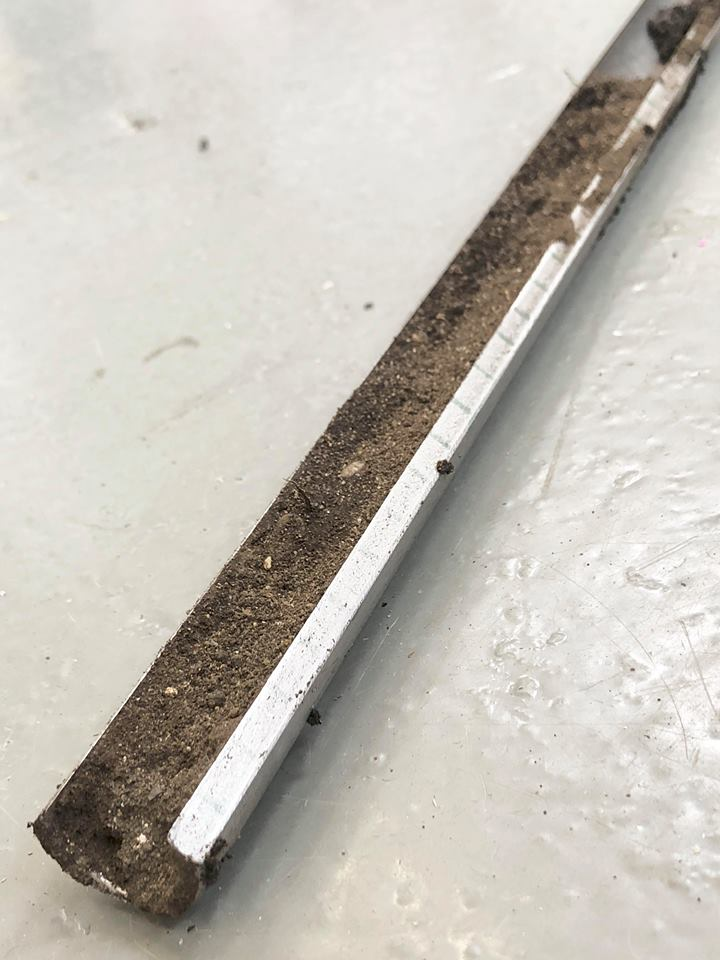
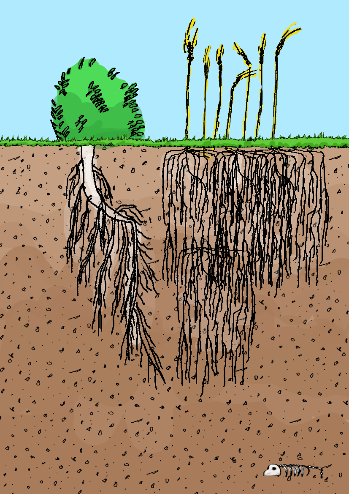

Introducing the Core Sampler
Empowering farmers one core at a time
The core sampler is simple tool that allows cylindrical samples of soil to be cut out of the ground at any:
For centuries, soil cores have been used to analyse the nutrient and moisture content of soil and now to locate the depth of the wetting front.

How Does it Work?
Our sampler allows the user to take a 40 cm long sample with each use. Then the soil from different depths can be felt directly by the user, allowing them to decide the moisture content for themselves. By inspecting the full length of the core, the boundary between wet and dry soil can be easily detected. The depth of this boundary can be quantitified using the distance markings along the side of the sampler.
Most crops in Ethiopia have an ideal wetting depth below 40 cm, so only one core is required for a complete analysis of the relevant soil. The table below shows the ideal depth of the wetting front for each of the major cash crops in Ethiopia. The core should be taken near enough to the crop so the soil has undergone the same level irrigation, but not too close that the corer cuts the roots. If the front is found to be:
- Too shallow - irrigate the crops
- Too deep - stop irrigation
- Roughly spot on - stop irrigation
| Crop |
Ideal Wetting Front Depth /cm |
| Wheat |
25 |
| Barley |
22 |
| Chickpea |
30 |
| Pulses |
28 |
| Lentils |
20 |
| Peas |
29 |
| Oilseeds |
20 |

Information about the major cash crops in Ethiopia found here and rooting depths from:
Nielsen, D. R. (1958). Movement of water in unsaturated soils as related to soil physical properties.
Coring Technique
The length of the core taken depends on the level of force and technique used. For ease of use, follow the following precedure:
- Push the sharp end of the shaft intp the ground
- Push downwards so the shaft moves down vertically
- Whilst pushing down repeatedly twist the sampler by rotating the handles
- When the hollow section is fully in the ground turn the handle 360° clockwise and then 360° anti-clockwise
- Repeat step 4 until the sampler turns easily
- Pull the sampler out of the ground
- Feel along the length of the core with your fingers to find the boundary between wet and dry soil
- Once the boundary is found check its depth using the measuring system along the side of the sampler
- To remove the core just peel/push the soil core out of the hollow section using your fingers
Always be careful of the sampler's sharp edges!
Overview of Use
- Select the location to sample
- Take the core sample
- Feel along the core length
- Find the wet/dry soil boundary
- Measure the depth of the boundary
- Irrigate accordingly
Key Design Features
- Material - Black Mild Steel
- Cheapest steel
- Strong
- Natural corrosion resistance due to black iron oxide outer layer
- Style of Corer - Open Along the Length
- Less soil compaction occurs when an open interval corer is used, so the sample is more accurately representative of the depth of soil in the ground
- Easier to penetrate the ground due to reduced wall friction
- Easier to remove the core after use as otherwise the force required for ejection would be unfeasibly high
- Height - 1 m
- High enough to minimise bending
- Short enough to be portable
- Core Length - 40 cm
- Experimentally found to be the longest core obtainable when using an accessible amount of force
- Allows the user to check if the wetting front has been overshot as the ideal wetting depth of all major cash crops in Ethiopia should be above 40 cm
- Measuring System - Labelled Length/Crop Table
- Instantaneous depth measurement
- The table of different crops' ideal wetting allows the core to be used on a variety of crops
Product Specifications
The sampler was purposely designed to be as simple as possible with low tolerances, so that it can be produced in Ethiopia using the standard metal components available. The final model was made using three components:
- 400 mm of black mild steel tube - 1" O.D. 10 SWG (corer)
- 600 mm of black mild steel round bar - 7/8" O.D. (solid shaft)
- 325 mm of black mild steel round bar - 7/8" O.D. (handle)
The key features that need to be maintained regardless of the dimensions of the components needed are:
- The diameter of the solid shaft and hollow corer should be approximately the same
- The corer should be down its length to reduce the diameter of the cross section to approximately 63% of its original diameter
- The wall thickness of the corer should be kept quite thin for easy penetration, but not too thin that the wall strength is compromised
Product Evaluation
| Metric |
Weighting |
Market Standard |
Score |
Core Sampler |
Comparison |
Score |
| Accuracy |
3 |
10 cm |
Datum |
1 cm per 10 cm measured *(1) |
-2 |
-4 |
| Price |
5 |
£81.64 (+Import Tax) |
Datum |
Material cost: £5.36 Labour Estimate*(2): £2 Total Cost: £7.36 |
+2 |
+10 |
| Locally Manufactured |
4 |
0% |
Datum |
100% |
+2 |
+8 |
| Durability |
3 |
PVC - AAAC (see below) |
Datum |
ABCAA |
-1 |
-3 |
| Time per Measurement *(3) |
4 |
14.2 hours/annum |
Datum |
91.25 hours/annum |
-2 |
-8 |
| Environmentally Friendly |
2 |
<1% of PVC is recycled - production releases harmful toxins (diatoxin) |
Datum |
Recyclable material - production releases harmful slag |
+1 |
+3 |
| |
|
|
|
|
Total Score |
+6 |
(1) - Soil compaction cause a 1 cm reduction in length for every 10 cm taken (2) - based on data about the minimum Ethiopian wage
(3) - Including installation and assembly time
Why Use A Core Sampler
- Accessible for farmers - the core sampler is very similar to farming tools used in Ethiopia, so the farmers will feel comfortable and their use feels very intuitive
- Cheap - the material cost is £5.36 and labour cost is estimated at £2 *, giving a low overall cost of £7.36
- Robust - the black mild steel is a very strong and tough material meaning it will be robust enough to survive in a farm environment
- Complete Control for Farmers - the sampler can be used when and wherever the farmer wants and they can personally decide if they think the soil is moist enough
The Future...
The aim is to create the most user friendly device possible and this takes repeated design iterations incorporating user feedback. The main focus of future designs will be on:
- Height - research will be done into the optimal sampler height that allows Ethiopian farmers to take a core with minimum force/more efficient force
- Measurement - the depth measurement system along the side of the corer will be update to be more environmentally resistant and easy to use
- Wall Thickness - optimise the wall thickness of the corer so penetration is easier